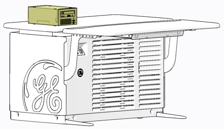
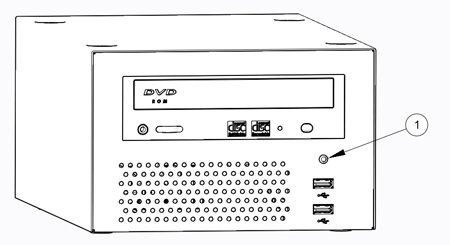

Operating Documentation
Direction 5193574-800, Rev# 22
LightSpeed 7.X Service Methods
Module Version 1.0, Version Date 10/15/13
Operating Documentation |
| Required Persons | Preliminary Reqs | Procedure | Finalization |
|---|---|---|---|
| 1 | Not Applicable | 30 mins | 30 mins |
This procedure shall be followed when replacing the Peripheral Media Tower (PMT) in the GOC6.6 VCT console.
Illustration 1: PMT (Single Bay)

| Last Revised: | October 10, 2013 |
| Item | Qty | Effectivity | Part# | Manufacturer | |
|---|---|---|---|---|---|
| Standard FE Toolkit | 1 | - | - | - | |
| Item | Qty | Effectivity | Part# | Manufacturer |
|---|---|---|---|---|
| Ty-Raps® (Cable Ties) | As Required | - | - | - |
| Item | Qty | Effectivity | Part# | Manufacturer | |
|---|---|---|---|---|---|
| Single Bay Peripheral Media Tower, DVD Multimedia | 1 | - | 5270510-20 | - | |
| ||||
| Potential for Shock | ||||
| Voltage may be present. | ||||
| Use proper lockout/tagout procedures before replacing components. See safety menu of Service MANUAL for appropriate procedures. |
| ||||
| Follow ALL required safety and PPE procedures customary for your organization when working on this product. | ||||
| Condition | Reference | Effectivity |
|---|---|---|
Only trained service personnel should service the GE Scanner. | - | - |
Select one of the following methods to Power OFF the Console:
If Applications are up, click on the [Shut Down] button on desktop display and select [Shutdown].
If Applications are down, open a Terminal Window. Type: halt , then press <Enter>.
When halt command has finished, power Off the console at the front panel switch.
Apply LOTO for console. For procedures, see Equipment Service - Lockout-Tagout-PPE.
Disconnect cables on the rear of the PMT assembly. Make certain these cables are clearly labeled.
Illustration 2: PMT Connections

| Item | Description | Destination |
| 1 | AC Power Outlet | Not Used |
| 2 | AC Power Inlet | Rear Bulkhead - J5 |
| 3 | DVD USB Input | NIO64HD Computer - USB 5 (System Board) |
| 4 | External USB (PMT Front Panel USB) | NIO64HD Computer - USB 7 (Expansion Card) |
Remove the original PMT from GOC6.6 console and set aside.
Place replacement PMT on GOC6.6 VCT console.
Reconnect all cables removed earlier.
Remove LOTO on console. For procedures, see Equipment Service - Lockout-Tagout-PPE.
Power On console.
Confirm that the power switch on the rear of the PMT assembly is turned on.
Confirm that the green Power Status LED on the PMT front panel is lit.
Illustration 3: PMT Power Status LED

Perform the Functional Checks → Console (GOC6.6) → Peripheral Media Tower (Single Bay) Functional Test instructions from the procedure list.